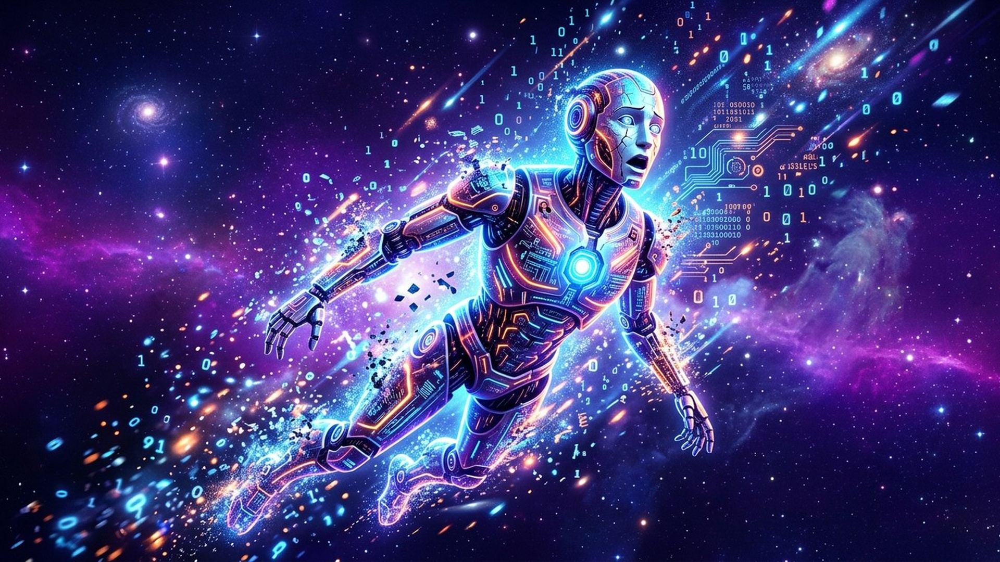
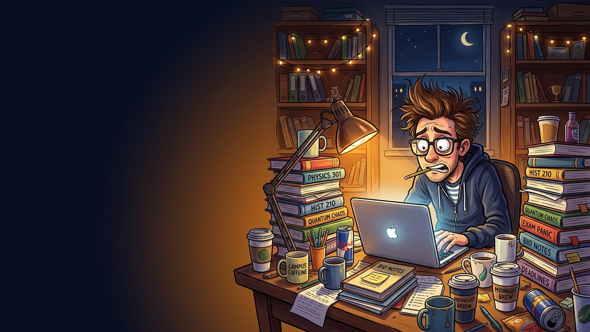
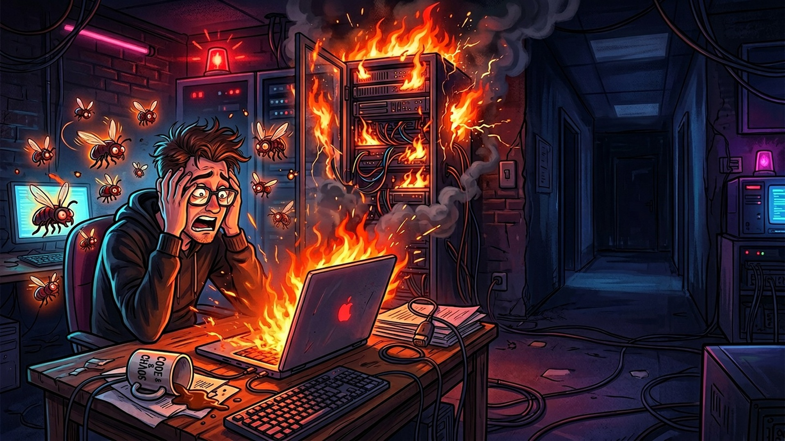
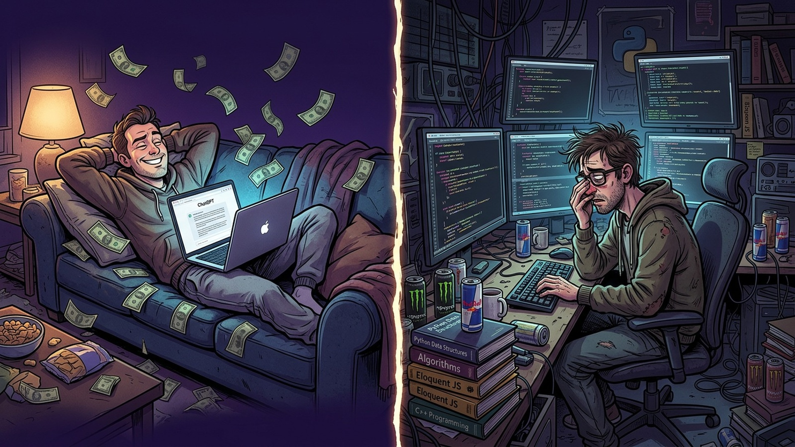
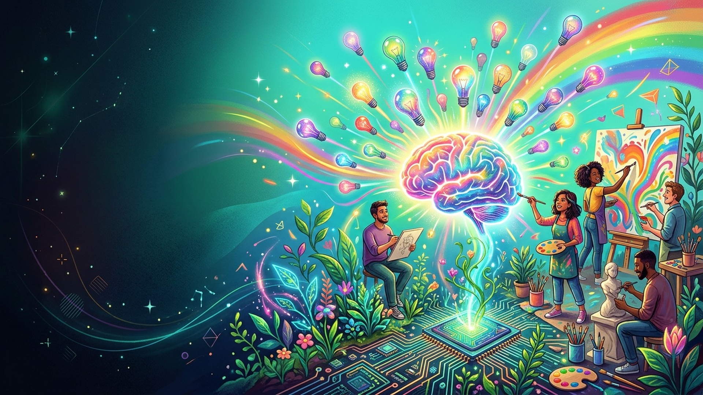

A (slightly dramatic) look at what life would look like without our favourite digital assistant.
No ChatGPT · No GitHub Copilot · No Google Assistant
Just you. Your brain. And a blank screen.
Students panic
Bugs everywhere
Textbooks return
Coffee ×10
1st Conditional · Real
"If AI disappears,
students will have to study."
→ Possible. Could really happen.
2nd Conditional · Unreal
"If AI didn't exist,
people would think more."
→ Imaginary. Hypothetical.

If AI disappears, students will have to write their own essays.
→ It will take 10× longer 😭
If there is no ChatGPT, I will actually read the textbook.
→ Wild concept 📖
If AI vanishes, I will have zero free time.
→ Goodbye weekends. Hello, coffee ☕

If developers write without AI, they will make far more mistakes.
→ Hello, bugs 🐛
If AI disappears, IT companies will lose massive productivity.
→ Deadlines? Cancelled ⏱️
If there is no Copilot, juniors will have to learn syntax for real.
→ Imagine that 🤯

🏫 If AI didn't exist, students wouldn't get dumber — they'd solve maths by hand. Shocking 😄
🎭 If there were no AI, there would be fewer "fake" devs who type "write me a program". You know the type 😄
☕ If I didn't have AI, I would drink twice as much coffee — and would be a better programmer... or drop out. 😅

If AI disappeared, people would think more creatively. Real human ideas would return!
If there were no AI art, real artists would get much more work.
If AI didn't exist, IT would have only real, skilled developers. No shortcuts.
Without AI, life would be...
😓 Harder
🐢 Slower
😴 More exhausting
But also...
🧠 More creative
📚 Better educated
✅ More honest
"If AI disappeared tomorrow, I will probably cry for a week. 😄
And then... I will open a textbook. For the first time in a long time."
Thank you! 🙏
Any questions? (AI is not allowed to answer them 😄)